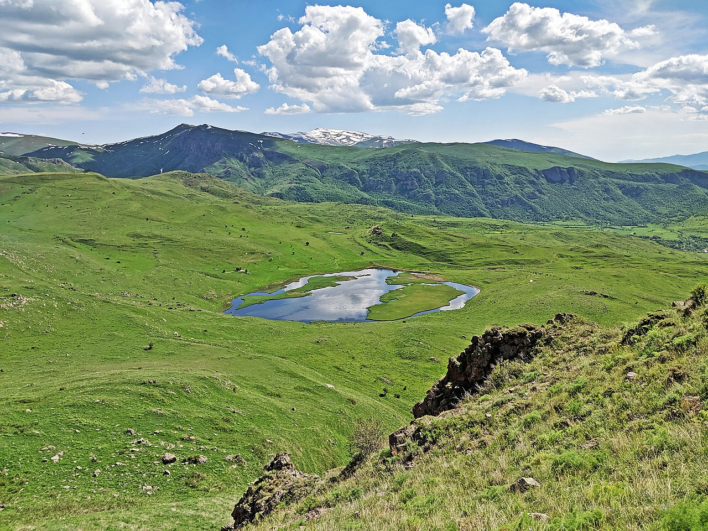
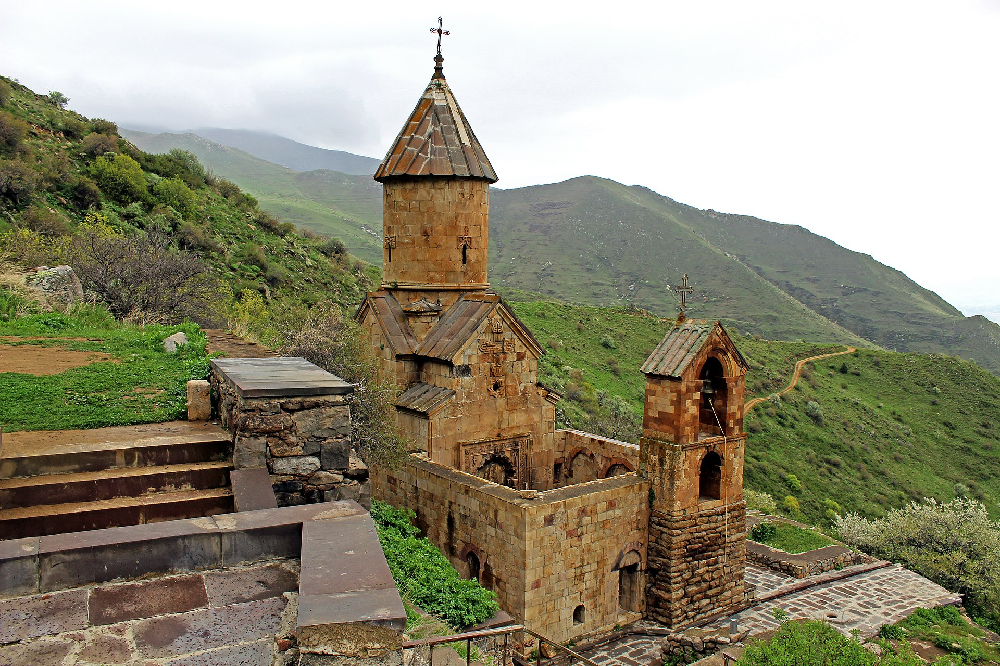
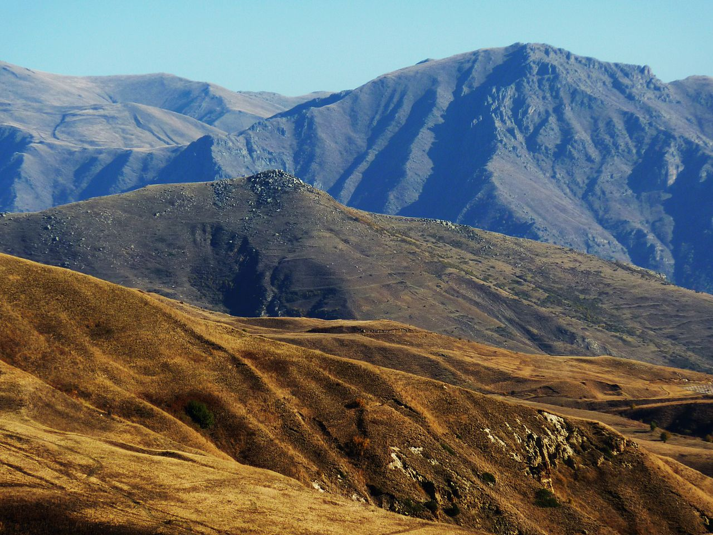

Վայոց ձոր
Վայոց ձորի մարզ, մարզի կարգավիճակ ունեցող վարչական միավոր Հայաստանի հարավային վերջույթում։ Զբաղեցնում է պատմական Հայաստանի Սյունիք նահանգի նույնանուն գավառի հիմնական տարածքը։ Զբաղեցնելով 2,308 կմ² տարածք՝ ըստ մեծության 7-րդն է Հայաստանի մարզերի շարքում։ Ընդգրկում է երեք հիմնական աշխարհագրական շրջաններ՝ Արփայի գոգավորություն, Վայքի ծալքաբեկորավոր լեռնաշղթա և Վարդենիսի հրաբխային լեռնավահան։ Հյուսիսում սահմանակցում է Գեղարքունիքի մարզին, հյուսիս-արևելքում՝ Արցախի Շահումյանի շրջանին, հարավ-արևմուտքում՝ Սյունիքի մարզին, հարավային հատվածում՝ Նախիջևանին, իսկ արևմուտքում՝ Արարատի մարզին։ Մայրաքաղաք Երևանին անմիջապես չի հարում։
Անվանում
Մարզի անվանումը կապված է Մեծ Հայքի Սյունիքի նահանգի համանուն գավառի անվան հետ (քանի որ մարզի ներկայիս սահմանները գրեթե նույնությամբ համընկնում են գավառի տարածքի հետ)[1]։ «Վայոց ձոր»-ը «Վայքի ձոր» տեղանվան գրաբարյան տարբերակն է։ Տեղանվան ծագումնաբանության վերաբերյալ կան բազմաթիվ վարկածներ։ Համաձայն այդ հիպոթեզներից ամենատարածվածի՝ «Վայոց ձոր» նշանակում է «Վշտերի ձոր»։ Այս տարբերակը մեկնաբանությունը կապված է Վայոց գավառի գլխավոր քաղաքում՝ Մոզում 735 թվականին տեղի ունեցած ավերիչ երկրաշարժի հետ, որի ժամանակ զոհվում է շուրջ 10 հազար մարդ։ Կիրակոս Գանձակեցին և Ստեփանոս Օրբելյանը գավառի Վայոց ձոր անվանումը կապում է հայերեն «վայ» բառի հետ։ Այնուամենայնիվ, այս տարբերակը համարվում է ոչ ճիշտ, քանի որ «Վայոց ձոր» տեղանվան հիշատակումներ եղել են Մոզի երկրաշարժից առնվազն 300 տարի առաջ։ 5-րդ դարի պատմիչ Եղիշեն հիշատակում է կաթողիկոս Հովսեփ Վայոցձորցուն, Մովսես Խորենացին նույն անձի մասին գրում է «քահանայապետն Վայոց ձորի Հողոցիմ գյուղից» և այլն[2][3][4]։ Ժամանակակից ուսումնասիրողները առաջ են քաշում մեկ այլ վարկած, համաձայն որի Վայոց ձոր գավառի անվանումը կապված է Վանի թագավորության տարածքում բնակված «վայ» ցեղի կամ դիցանվան հետ։ Չի բացառվում նաև, որ այն կարող է կապված լինել որևէ աշխարհագրական օբյեկտի հետ։
Պատմություն
Վայոց ձորի մարզը զբաղեցնում է պատմական Հայաստանի Սյունյաց նահանգի նույնանուն գավառի հիմնական տարածքը։ Ինչպես Վայոց ձորի, այնպես էլ նրանում գտնվող մի շարք բնակավայրերի մասին հայկական և օտարալեզու սկզբնաղբյուրներում կան բազմաթիվ հիշատակություններ և վկայություններ։
  